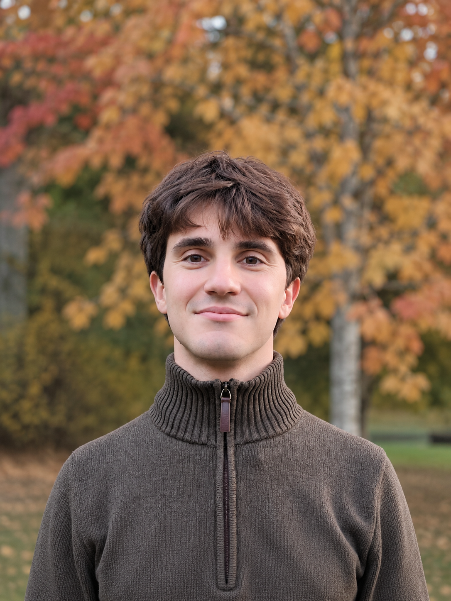

Giovanni Guidarini
- Birth date
- 14 January 2003
- Birth city
- Milan, Italy
- Current city
- Zurich, Switzerland

Education
-
Sep. 2025 — Present
ETH Zurich
MSc in Computational Science and Engineering
Zurich, Switzerland -
Sep. 2022 — Jul. 2025
Politecnico di Milano
BSc in Mathematical Engineering
Milan, Italy
Internship
-
Jul. 2024
Anima SGR
Artificial Intelligence team intern
Milan, Italy